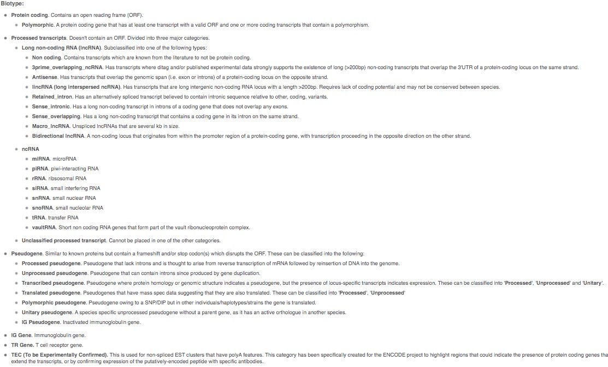

之前我在简书上写了一篇“如何只下载TCGA肿瘤或正常标本的count”的教程，原以为没什么人看的。不过这两天简书上有朋友私信我，如何只下载lncRNA的数据。这个功能在GDCRNATools里好像上不支持的，因为这个包都是下载全部的RNA数据（包括其他的TCGA工具基本都是只下载RNA数据），具体要区分mRNA和lncRNA是要有专门注释文件的。
我这里想借鉴两种方法，链接在这里：
我们从TCGA下载的RNA基因，包括从生物公司做全基因测序的结果，一般都有将近6万个基因。默认给的基因名就是ensembl 格式（也就是ENSG00开头的基因），当然公司一般都是给你一个注释文件，把你转换成symbol格式的基因（比如TP53）。但话多说一句，做富集分析最好选用entrezid格式（一串数字）
我们不是要关注怎么转换基因的ID，而是要知道如何下载注释文件，以前有很多眼花缭乱的教程告诉我们怎么去下载注释文件，然而随着生物信息的发展，各种R包层出不穷，完全可以一步就给你转换好。但是转换好了基因，你依旧不知道哪个是mRNA，哪个是lncRNA（或许有，比如tinyarray，但是依然有缺点），因为我们需要的是注释，不是转换。
我们需要的基因注释文件，常用的叫做genecode（记得区分物种）。但是这个鬼东西经常更新，我以前用的是v22版，后面又出了v23版，现在官网又有了v38版，但是无论是哪一版，我觉得差不了太多，不过要注意的是不同的版本，注释出来的结果可能也是有细微差异。
最好的办法当然是去官网下载最新的GTF文件，但那个东西文件有几十M，还经常下载中断，而我从来没有下载成功过，所以我并不推荐。
如果你刚好需要做一个转录组测序，那么生物公司基本都会给你一个gene.xls的文件，我之前的那个公司大概是5万8千个基因左右，文件包括有gene_id、gene_name、gene_chr、gene_start、gene_end、gene_strand、gene_length、gene_biotype、gene_description等文件，大概这个样子。
| gene_id | gene_name | gene_chr | gene_start | gene_end | gene_strand | gene_length | gene_biotype | gene_description |
|---|---|---|---|---|---|---|---|---|
| ENSG00000285994 | AL731559.1 | 10 | 12563151 | 12567351 | + | 3732 | sense_intronic | novel transcript, sense intronic to CAMK1D |
| ENSG00000285993 | AC018931.1 | 18 | 46409197 | 46410645 | - | 1246 | antisense | novel transcript, antisense to RNF165 |
| ENSG00000285992 | AC120036.5 | 8 | 47129262 | 47132628 | + | 956 | lincRNA | novel transcript |
| ENSG00000285991 | AL355312.5 | 6 | 149817937 | 149896011 | - | 5065 | protein_coding | novel transcript |
| ENSG00000285990 | AL589743.7 | 14 | 19244904 | 19269380 | - | 647 | transcribed_unprocessed_pseudogene | neurobeachin (NBEA) pseudogene |
| ENSG00000285989 | AL357123.1 | X | 138558996 | 138559298 | + | 303 | TEC | TEC |
| ENSG00000285988 | AL392086.3 | 10 | 6737418 | 6840712 | + | 614 | lincRNA | novel transcript, LINP1-LINC00707 readthrough |
| ENSG00000285987 | AL157886.1 | 9 | 84316514 | 84657077 | + | 3205 | antisense | |
| ENSG00000285986 | BX248415.1 | 1 | 196850283 | 196884793 | + | 614 | unprocessed_pseudogene | complement factor H related 3 (CFHR3) pseudogene |
我上传到了百度网盘
链接: https://pan.baidu.com/s/1VVYMGg6AzLzv-vKpuGkV1A
密码: 3rnq
UCSC大学有一个Xena的网址，以前服务器是国外的，访问不稳定，后面Hiplot跟他们搞了合作，弄了个免费的Xena中国镜像，所以方便了很多，但是目前只有v22版的，但我觉得够用。
随便找个GDC Hub的的数据集，然后随便选一个RNAseq的基因表达类型就可以找到注释文件下载
网址是https://xena-gdc.hiplot.com.cn/download/gencode.v22.annotation.gene.probeMap
这里是probeMap格式，可以用excel直接打开的，长这样：
| id | gene | chrom | chromStart | chromEnd | strand |
|---|---|---|---|---|---|
| ENSG00000223972.5 | DDX11L1 | chr1 | 11869 | 14409 | + |
| ENSG00000227232.5 | WASH7P | chr1 | 14404 | 29570 | - |
| ENSG00000278267.1 | MIR6859-3 | chr1 | 17369 | 17436 | - |
| ENSG00000243485.3 | RP11-34P13.3 | chr1 | 29554 | 31109 | + |
但是这个表里，并没有biotype，我这里给一个百度云盘的文件，v22版的tsv格式，也可以直接用excel打开
链接: https://pan.baidu.com/s/1juzwlSLXUVEVxpD0cTyCag
密码: 1940
这个文件长这个样子：
| gene_id | gene_name | seqname | start | end | strand | gene_type | gene_status | havana_gene | full_length | exon_length | exon_num |
|---|---|---|---|---|---|---|---|---|---|---|---|
| ENSG00000223972.5 | DDX11L1 | chr1 | 11869 | 14409 | + | transcribed_unprocessed_pseudogene | KNOWN | OTTHUMG00000000961.2 | 2541 | 1735 | 9 |
| ENSG00000238009.5 | RP11-34P13.7 | chr1 | 89295 | 133723 | - | lincRNA | NOVEL | OTTHUMG00000001096.2 | 44429 | 3726 | 17 |
| ENSG00000230415.1 | RP5-902P8.10 | chr1 | 1275223 | 1280420 | + | lincRNA | NOVEL | OTTHUMG00000002234.2 | 5198 | 513 | 5 |
| ENSG00000236335.1 | RP4-591L5.1 | chr1 | 30409560 | 30411638 | - | lincRNA | NOVEL | OTTHUMG00000003682.1 | 2079 | 507 | 3 |
| ENSG00000213842.2 | SUGT1P2 | chr3 | 32752910 | 32753901 | + | processed_pseudogene | KNOWN | OTTHUMG00000155904.1 | 992 | 992 | 1 |
| ENSG00000227337.1 | AC139452.2 | chr3 | 32785646 | 32786116 | + | processed_pseudogene | KNOWN | OTTHUMG00000155776.1 | 471 | 471 | 1 |
| ENSG00000206557.5 | TRIM71 | chr3 | 32818018 | 32897826 | + | protein_coding | KNOWN | OTTHUMG00000155778.3 | 79809 | 8685 | 4 |
PS：我发现这几个注释文件的基因数量并不一致，甚至mRNA（protein_coding）都有上千个缺口，但我觉得仍然涵盖了我们常用的基因。
在开始转换前，我们需要知道mRNA和lncRNA，或者说miRNA到底包括哪些基因？
本文不做科普，想要了解他们的基因类型，可以点击下面这个链接：
大致的介绍如下：

有了biotype，可以制作转换成mRNA、lncRNA和miRNA的文件了。在第一篇借鉴文章里作者说他最终汇总到了一个Gene_info.xlsx），但他又偏偏不告诉这个文件在哪里，后面连我自己都忘记了，我是怎么凭一己之力下载到了这个文件，现在分享在百度网盘上
链接: https://pan.baidu.com/s/12oPmYKG-TVi4lhcud5_0JQ
密码: n7v0
这里有三个sheet，分别是lncRNA_info（14852）、mRNA_info（18192个）和miRNA_info（1670个），总共算起来有34714个基因。
PS：这里我并没有自己统计，还剩2万5千多个基因是什么，也可能是假基因之类的。
剩下的，完全可以参照第一篇文章进行注释
# 注释mRNA，lncRNA和miRNA
mRNA_info <- read.xlsx("./RawData/Gene_info.xlsx",sheet = "mRNA_info")
lncRNA_info <- read.xlsx("./RawData/Gene_info.xlsx",sheet = "lncRNA_info")
miRNA_info <- read.xlsx("./RawData/Gene_info.xlsx",sheet = "miRNA_info")### 统计mRNA
mRNA_gset <- TCGA_gset[rownames(TCGA_gset) %in% mRNA_info$gene_name,]
dim(mRNA_gset)
write.csv(mRNA_gset,"./TCGA_output/TCGA_HNSC_mRNA.csv",quote = F,row.names = T)
### 统计lncRNA
lncRNA_gset <- TCGA_gset[rownames(TCGA_gset) %in% lncRNA_info$gene_name,]
dim(lncRNA_gset)
write.csv(lncRNA_gset,"./TCGA_output/TCGA_HNSC_lncRNA.csv",quote = F,row.names = T)
### 统计miRNA
miRNA_gset <- TCGA_gset[rownames(TCGA_gset) %in% miRNA_info$gene_name,]
dim(miRNA_gset)
write.csv(miRNA_gset,"./TCGA_output/TCGA_HNSC_miRNA.csv",quote = F,row.names = T)这样就很快的制成了三个表格，分别进行了提取。
在第二篇文章里，小洁忘了分身写了一个R包，叫做tinyarray，可以很好的处理这个问题，然而这个包却托管在Github上，如果你可以正常访问Github当然没有问题，仓库是xjsun1221/tinyarray。
然而我觉得你应该很难安装的，所以我Fork到了我的gitee上面，因此，可以很快的安装
devtools::install_git('https://gitee.com/swcyo/tinyarray')中途提示你缺哪个包，你就安装哪个包，目前这个包非常强大，集成了很多很多的功能，可以处理GEO和TCGA的很多数据，还可以很快捷的画火山图、热图、PCA图、生存分析、富集分析等等，ID转换只是其中一个小部分，以后可以写个专门的教程推广一下。
这里我们需要的gene id是TCGA或者GTEx上的格式，也就是ensembl 格式，格式后面可以带点（版本号），也可以不带点，总之就是一个trans_exp()函数。
使用这个包的示例文档来说明一下，先随机生成100个基因，其中5个TCGA患者，5个GTEx患者
suppressMessages(library(tinyarray))
exp = matrix(rnorm(1000),ncol = 10)
rownames(exp) = sample(mRNA_annov23$gene_id,100)
colnames(exp) = c(paste0("TCGA",1:5),paste0("GTEX",1:5))我们简单看一下前几个数据
| TCGA1 | TCGA2 | TCGA3 | TCGA4 | TCGA5 | GTEX1 | GTEX2 | GTEX3 | GTEX4 | GTEX5 | |
|---|---|---|---|---|---|---|---|---|---|---|
| ENSG00000117519.15 | -2.3668855 | 0.1262266 | -0.9932833 | -1.5790701 | 0.8062750 | -1.1574091 | 0.6819423 | 0.1313676 | -1.7710247 | 0.9222995 |
| ENSG00000056998.18 | -1.2683769 | 0.6173742 | -0.4102326 | -0.4675051 | -0.4013815 | -0.4755779 | 0.3729509 | 0.0998766 | 4.0454228 | -1.8475756 |
| ENSG00000111732.10 | -1.1942220 | -1.6520688 | 0.5840357 | 2.0436953 | -1.0568737 | -0.0134119 | 1.2309836 | 1.2240721 | 1.7842533 | -0.3847856 |
| ENSG00000205795.4 | -0.5871370 | -1.0147223 | 1.5645194 | -1.0254634 | 0.0907559 | 1.6620515 | 1.1592646 | 0.6424431 | 1.0686773 | -0.2255054 |
| ENSG00000155542.11 | -0.0889840 | -1.2574625 | 0.1977987 | 0.7655961 | -0.3490159 | 0.3045645 | 0.0986034 | -0.1709641 | 0.4167206 | -0.9748929 |
| ENSG00000100647.7 | -0.4539508 | 0.3498845 | -0.9735861 | -0.1466514 | -1.7197131 | -0.3295457 | 2.1979109 | 0.5791002 | 0.1686249 | -1.2657021 |
这个转换函数是这样的，目前可以转mRNA和lncRNA，可以只转一种，也可以都转.
trans_exp(exp, mrna_only = FALSE, lncrna_only = FALSE, gtex = FALSE)library(tinyarray)
k=mrna<-trans_exp(exp) #一句话即可## 100 of genes successfully mapping to mRNA,0 of genes successfully mapping to lncRNAlibrary(tinyarray)
mrna<-trans_exp(exp,mrna_only = T,gtex = T) #有GTEx数据的话，可以加一句gtex = T## 100 of genes successfully mapping to mRNA,0 of genes successfully mapping to lncRNA| TCGA1 | TCGA2 | TCGA3 | TCGA4 | TCGA5 | GTEX1 | GTEX2 | GTEX3 | GTEX4 | GTEX5 | |
|---|---|---|---|---|---|---|---|---|---|---|
| CNN3 | -2.3668855 | 0.1262266 | -0.9932833 | -1.5790701 | 0.8062750 | -1.1574091 | 0.6819423 | 0.1313676 | -1.7710247 | 0.9222995 |
| GYG2 | -1.2683769 | 0.6173742 | -0.4102326 | -0.4675051 | -0.4013815 | -0.4755779 | 0.3729509 | 0.0998766 | 4.0454228 | -1.8475756 |
| AICDA | -1.1942220 | -1.6520688 | 0.5840357 | 2.0436953 | -1.0568737 | -0.0134119 | 1.2309836 | 1.2240721 | 1.7842533 | -0.3847856 |
| CYS1 | -0.5871370 | -1.0147223 | 1.5645194 | -1.0254634 | 0.0907559 | 1.6620515 | 1.1592646 | 0.6424431 | 1.0686773 | -0.2255054 |
| SETD9 | -0.0889840 | -1.2574625 | 0.1977987 | 0.7655961 | -0.3490159 | 0.3045645 | 0.0986034 | -0.1709641 | 0.4167206 | -0.9748929 |
| SUSD6 | -0.4539508 | 0.3498845 | -0.9735861 | -0.1466514 | -1.7197131 | -0.3295457 | 2.1979109 | 0.5791002 | 0.1686249 | -1.2657021 |
lncrna<-trans_exp(exp,lncrna_only = T)## 100 of genes successfully mapping to mRNA,0 of genes successfully mapping to lncRNA由于这个随机的基因里没有lncRNA，所以啥也没有。。。
用这个包，一步到位，很是方便
优点：
ensembl 快速转成symbol
可以选择只转mRNA还是lncRNA
缺点：
没有miRNA
基本不更新